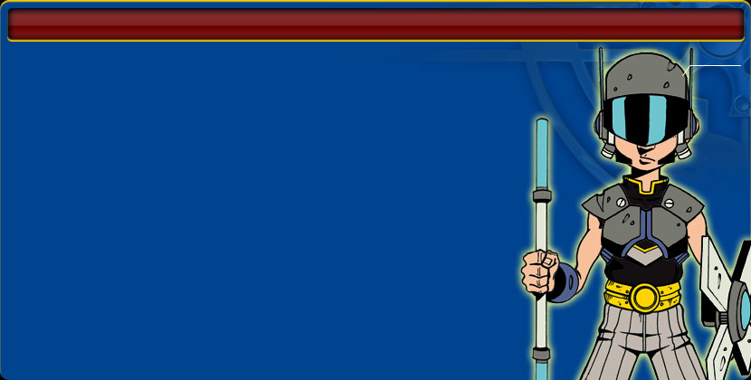

This is the world page
warrior grey, knight blue, magician purple, alchemist orange, adventurer green, ninja red
Descriptions of ages from the official website
- L'era perduta: L'alba della civiltà, un'era in cui gli umani vivono la vita di tutti i giorni fianco a fianco con i dinosauri e altre creature preistoriche. Incontra gli abitanti delle tribù Sirachi e Nefanti, conosci i loro i segreti ed i magici rituali. Aiuta lo Sciamano delle Ombre e lo stregone Thereox a salvare il capo tribù Oriono, rapito da un terribile T-Rex sotto l'influsso della magia cattiva. Scopri inoltre in questa epoca come è nato il favoloso Albero della Vita, un essere eterno che potresti ritrovare in ogni epoca!
- L'era dell'oro: In questa era sorgono le prime città. Gli umani crearono qui straordinari templi dalla sabbia del deserto. Un terribile sacrificio sta per compiersi ai danni del coraggioso principe Cayleb! Esplora il Tempio dell'Alba e il Tempio del Crepuscolo, fatti aiutare dai fieri alleati del Clan dell'Aquila e non dimenticare di domare la splendida Fenice di Fuoco. Solo così potrai riportare la pace in queste terre scottate dal sole e minacciata da enormi e malefici scarabei d'oro.
- L'era incantata: L'epoca della magia, abitata da grandi maghi e leggendari dragoni. Anche le foreste hanno gli occhi in questi tempi incantati. L'imponente castello di Gershon è stato conquistato dal malefico drago Uzad costringendo la principessa Mayena ed il Mago Morande in esilio tra i cunicoli di grotte del Nord Est. Fatti strada attraverso la Foresta Oscura in sella al tuo fido destriero Zephirinai, un esemplare unico di unicorno nero, aiuta le bellissime Driadi della foresta e riconquista il castello per la gloria di Gershon!
- L'era ghiacciata: Le terre di Elusia sono completamente ricoperte di ghiaccio e vivere qui diventa difficile per gli umani. Perfino l'Albero della Vita è in pericolo a causa delle sue radici ormai congelate. Scoprirai esplorando le città gemelle di Aisis e Keladra che la potentissima Regina del Ghiaccio Isys è stata rapita ed imprigionata all'interno del castello di cristallo di Kandeleis. Una terribile Idra ti aspetta fra le gelide sale della fortezza.
- La nuova era: Un'epoca divisa in due: in alto la sfavillante Teknologi, la città fluttuante, ed in basso le malridotte strade dei Bassifondi in cui la gente deve lottare per sopravvivere. In questa epoca di prevaricazioni la rivoluzionaria Mara è stata ingiustamente incarcerata mentre suo marito, l'eremita Pieter, è stato costretto a vivere nella malsana Purgi. Libera entrambi e guida gli abitanti dei bassifondi verso la rivoluzione e la libertà!
- L'era dell'Incubo: Questo è il terribile reame del Signore Oscuro Necare. I demoni hanno quasi completato la loro malefica opera di distruzione e stanno segnando la fine dell'uomo. Il coraggioso Rafa è rimasto a capo di un ultimo avanposto di umani, l'ultima speranza per tutti noi. Con il suo aiuto e grazie ad un fidato grifone raggiungi il castello del Signore Oscuro per l'ultima tremenda battaglia. Sarai in grado di sconfiggerlo e di liberare il Guardiano del Tempo?

Guilds
Guerriero: La forza è nelle tue mani! La gilda dei guerrieri è formata da eroi coraggiosi
che non temono di buttarsi nella mischia per misurare la loro forza in battaglia!
Potere Speciale: Infliggi danni extra al nemico grazie all'incredibile forza
che ti dona questa gilda!
Cavaliere: Fieri e leali combattenti, sono maestri con le armi bianche come le spade e lance.
Sempre pronti ad aiutare chi è in pericolo, i membri di questa gilda sono dei terribili avversari.
Potere Speciale: Le tue lance e spade stordiranno spesso il nemico, dandoti la
possibilità di colpirlo ancora!
Mago: Fuoco, aria, acqua e terra... questi sono gli elementi che può controllare
chi fa parte della gilda dei maghi! Gli elementi non avranno più segreti, e i nemici dovranno tremare!
Potere Speciale: La tua magia non ha limiti. Usala per curare le ferite di
battaglia e non perdere mai!
Alchimista: Chi fa parte della gilda degli alchimisti non si trova mai in difficoltà!
Se qualcosa non c'è ... la crea! Gli alchimisti non si fanno mai cogliere impreparati sul campo di battaglia, sorprendendo
i nemici con le loro uniche creazioni.
Potere Speciale: Gli alchimisti creano qualsiasi cosa. L'ultima trovata di questi
inventori è l'assorbi energia, che permette di rubare l'energia dei nemici per usarla a proprio vantaggio!
Avventuriero: La Natura è amica della gilda degli avventurieri! I membri di questa
gilda rispettano e curano gli elementi naturali che li circondano, e questi ricambiano il favore: una liana, o una buca
improvvisa, possono fare la differenza in una difficile battaglia!
Potere Speciale: L'avventuriero basa le sue tecniche sulla furia della natura!
Per questo a volte riuscirai a infliggere un colpo critico ai tuoi nemici!
Ninja: Esseri dell'ombra, così vengono chiamati gli appartenenti alla gilda dei Ninja.
Maestri nell'arte del nascondersi, i ninja riescono a raggiungere qualsiasi posto grazie alla loro discrezione.
Sono dei maestri con le armi da lancio.
Potere Speciale: Il Ninja è come un'ombra, nessuno lo vede.
Per questo il nemico non si accorgerà quando riuscirai a infliggergli degli attacchi doppi!